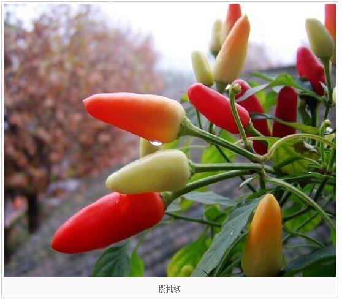
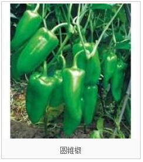
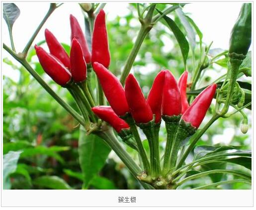
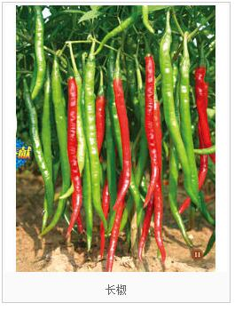
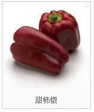

辣椒，别名：牛角椒、长辣椒、菜椒、灯笼椒，拉丁文名：Capsicum annuum L.，茄科、辣椒属一年或有限多年生草本植物。茎近无毛或微生柔毛，分枝稍之字形折曲。叶互生，枝顶端节不伸长而成双生或簇生状，矩圆状卵形、卵形或卵状披针形，全缘，顶端短渐尖或急尖，基部狭楔形；花单生，俯垂；花萼杯状，不显著5齿；花冠白色，裂片卵形；花药灰紫色。果梗较粗壮，俯垂；果实长指状，顶端渐尖且常弯曲，未成熟时绿色，成熟后成红色、橙色或紫红色，味辣。种子扁肾形，淡黄色。
草本辣椒的生长与发育因地不同，在长江沿线及华北各地都是一年生植物，每年冬季枯死。在热带及亚热带地区如海南、广西、广东及云南的南部，可以露地越冬，二年春暖又可发生新芽。在四川、贵州、江西等地一带，冬季利用保温措施防冻，也可以老根越冬。老根越冬的辣椒，因其结果早于新苗，在保护地种植技术普及以前，它是一种较能获得经济效益的辣椒，也好吃。按果实特征分为五个变种。
1、樱桃类辣椒，叶中等大小，圆形、卵圆或椭圆形，果小如樱桃，圆形或扁圆形，红、黄或微紫色，辣味甚强，制干辣椒或供观赏，如成都的扣子椒、五色椒等；

2、圆锥椒类，植株矮，果实为圆锥形或圆筒形，多向上生长，味辣，如仓平的鸡心椒等；

3、簇生椒类，叶狭长，果实簇生，向上生长，果色深红，果肉薄，辣味甚强，油分高，多作干辣椒栽培，晚熟，耐热，抗病毒力强，如贵州七星椒等；

4、长椒类，株型矮小至高大，分枝性强，叶片较小或中等，果实一般下垂，为长角形，先端尖，微弯曲，似牛角、羊角、线形。果肉薄或厚，肉薄、辛辣味浓，供干制、腌渍或制辣椒酱，如陕西的大角椒；肉厚，辛辣味适中的供鲜食，如长沙牛角椒等；

5、甜柿椒类，分枝性较弱，叶片和果实均较大。根据辣椒的生长分枝和结果习性，也可分为无限生长类型、有限生长类型和部分有限生长类型。
